V1.0 MOTHERBOARD (Small)
ANA, CPU, GPU & RAM SHOT (Large)
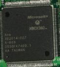
ANA:
This is the Scaler chip for the Xbox 360. The PS3 does not have a scaler! This is used when upconverting the graphics. Example, taking a 480 or 720p picture, and upconverting to 1080i, or 1080p.
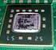
This is the 3-Core CPU for the Xbox 360.
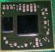
GPU.
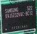
One of the Memory (RAM) Chips.
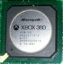
Southbridge Chip by SiS. (LARGE VIEW)
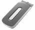
20GB Hard Disk Drive = Serial ATA
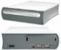
External HD_DVD Drive (Usb 2.0)
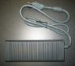
External Power Supply.

Multi Media remote. Came with the first release of XBox360s. IT was not included in models made after january 2006.
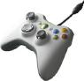
Standard Wired Controller
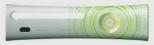
Face plate (Microsoft).
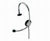
OEM Headset. Plugs into wired or wireless controller.